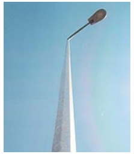
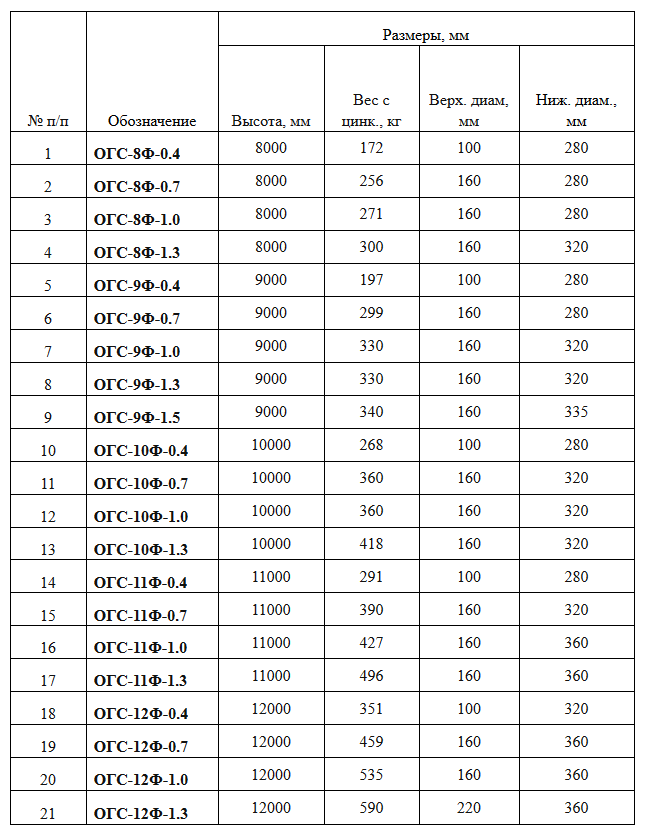
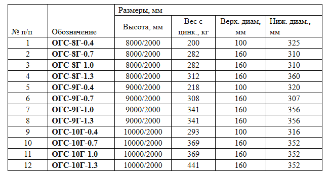

Опоры граненые силовые (ОГС) предназначены для установки светильников на открытых пространствах улиц, площадей, территорий, дорог и развязок. Опоры рассчитаны на восприятие постоянных и временных нагрузок от 0,4 до 3,0 т. По способу монтажа опоры разделяются на фланцевые и прямостоечные.
Опоры изготавливаются из листовой стали с одним продольным сварным швом, защищены от коррозии методом горячего цинкования (ГОСТ 9.307-89). Гарантия на коррозийную стойкость не менее 30 лет.
Могут нести нагрузку до 3000 кг.
К опорам предусмотрена надземная и подземная подводка кабеля.
Для подземного подвода кабеля исполнение вк: в подземной части опоры (либо фундаментного блока) расположен лючок для ввода кабеля в опору. В надземной части опоры расположен лючок обслуживания. В верхней части опоры на расстоянии 0,7 м от верхнего торца приваривается гайка заземления.

